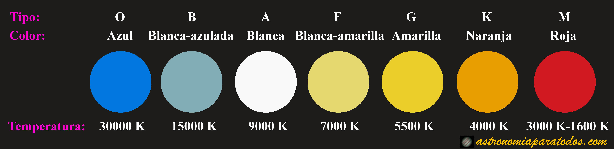

Las estrellas son grandes esferas de gas caliente que emiten luz y energía debido
a las reacciones
nucleares en su núcleo. Estas reacciones convierten hidrógeno en helio y liberan enormes cantidades
de energía en forma de luz y calor.
Composición: La mayoría de las estrellas, incluido nuestro Sol, están compuestas principalmente de
hidrógeno y helio, los dos elementos más abundantes en el universo. Las diferentes proporciones de
estos elementos y pequeñas cantidades de otros elementos determinan las características y el ciclo
de vida de una estrella.

Espectro y Clasificación: Las estrellas se clasifican según su espectro (la
distribución de luz en
diferentes longitudes de onda) y su temperatura superficial. La clasificación más común es la secuencia
espectral O, B, A, F, G, K, M (de más caliente a más fría).

Esta clasificación se conoce como la Clasificación Espectral de Harvard.
Color y Luminosidad: El color de una estrella puede proporcionar información sobre su temperatura. Las estrellas más calientes tienden a ser azules o blancas, mientras que las más frías pueden ser rojas. La luminosidad de una estrella está relacionada con su tamaño y temperatura.
Color y Luminosidad: El color de una estrella puede proporcionar información sobre su temperatura. Las estrellas más calientes tienden a ser azules o blancas, mientras que las más frías pueden ser rojas. La luminosidad de una estrella está relacionada con su tamaño y temperatura.